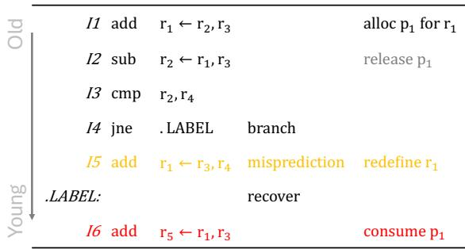
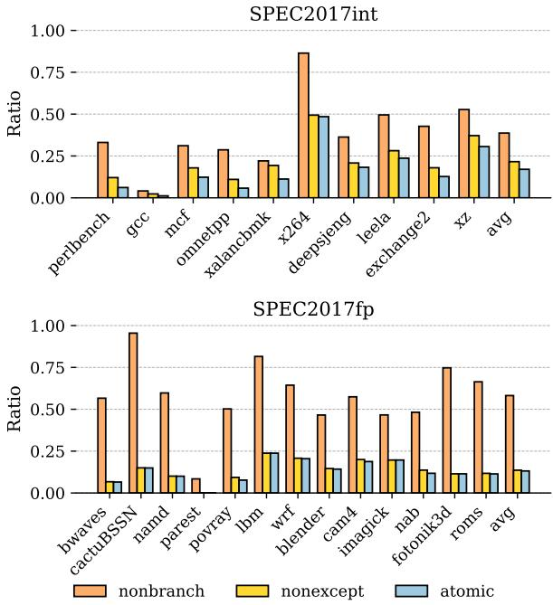
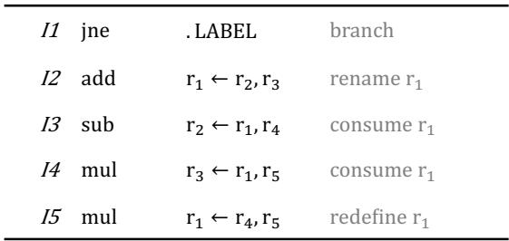
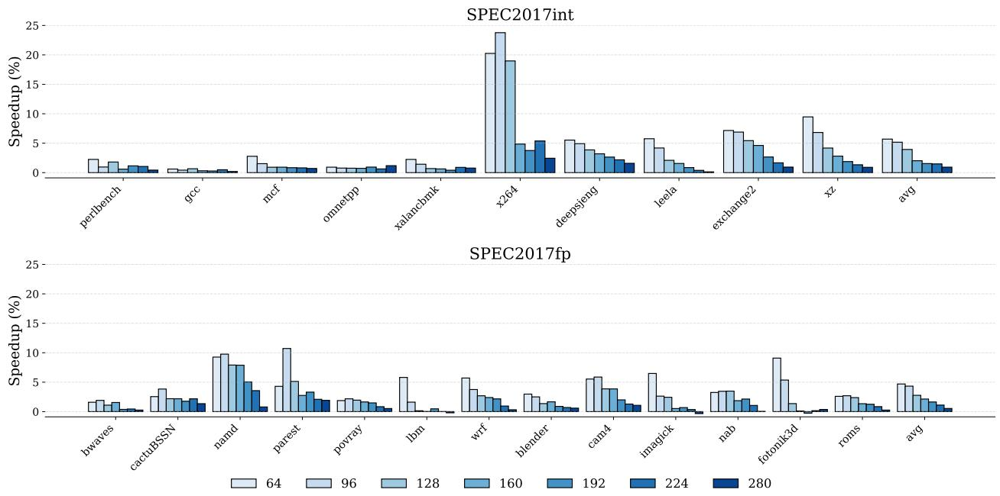
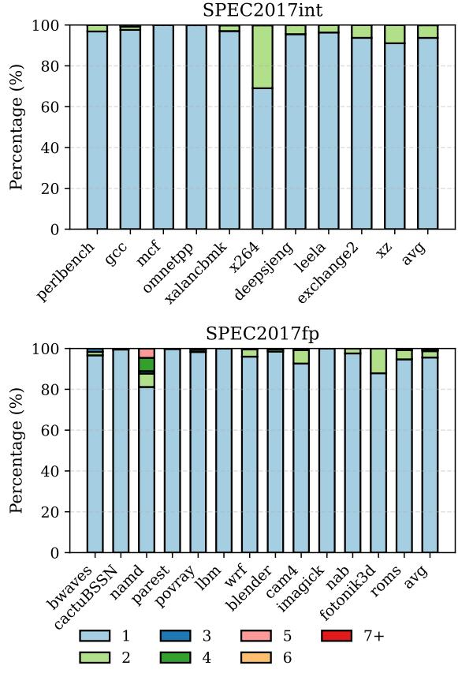

ATR: Out-of-Order Register Release Exploiting Atomic Regions 图表详解¶
Figure 1: IPC improves with increasing register file size¶

- 图表标题为“SPEC2017int”，横轴为“Number of Physical Registers”，范围从64至280，纵轴为“Normalized IPC”，范围从0.0至1.0，基准值1.0代表无限寄存器配置下的理想性能。
- 图中包含多条曲线，分别对应不同SPEC2017int基准测试程序：perlbench、gcc、mcf、omnetpp、xalancbmk、x264、deepsjeng、leela、exchange2、xz。
- 所有曲线均呈现随物理寄存器数量增加而IPC逐步提升并趋于饱和的趋势，表明寄存器资源对性能存在显著约束。
- 在64寄存器配置下，各程序的归一化IPC普遍较低，例如perlbench约为0.35，gcc约为0.45，平均仅达理想性能的37.7%，与正文描述一致。
- 随着寄存器数增至280，所有程序的IPC均接近1.0，说明在此规模下寄存器压力基本消除。
- 不同程序对寄存器敏感度存在差异：如x264和leela在低寄存器数时表现较差，增长斜率更陡；而perlbench和gcc则相对平缓。
- 该图直观验证了论文核心观点：扩大物理寄存器文件是提升IPC的关键手段，但受限于面积与功耗，需通过高效释放机制（如ATR）缓解压力。
| 程序名 | 64寄存器IPC（近似） | 280寄存器IPC（近似） |
|---|---|---|
| perlbench | 0.35 | 0.98 |
| gcc | 0.45 | 0.99 |
| mcf | 0.50 | 0.99 |
| omnetpp | 0.55 | 0.99 |
| xalancbmk | 0.60 | 0.99 |
| x264 | 0.30 | 0.99 |
| deepsjeng | 0.40 | 0.99 |
| leela | 0.35 | 0.99 |
| exchange2 | 0.50 | 0.99 |
| xz | 0.55 | 0.99 |
- 曲线间交叉现象表明不同工作负载的寄存器需求模式各异，进一步凸显动态优化技术（如ATR）的必要性。
Figure 2: An example of a register value that is speculatively released and laterreused.¶

- 图片展示了一个寄存器值被投机性释放后又被重用的典型场景，用于说明传统早期释放机制（Speculative Early Release）的安全隐患。
- 指令序列按程序顺序从上到下排列，左侧标注“Old”至“Young”，表示指令年龄递增。
- I1 执行
add r1 ← r2, r3，分配物理寄存器 p1 给架构寄存器 r1。 - I2 执行
sub r2 ← r1, r3，消费 p1 的值，此时若采用投机性释放策略，可能在 I2 执行后立即释放 p1。 - I3 执行
cmp r2, r4，无直接数据依赖于 p1。 - I4 执行
jne .LABEL，为条件分支指令，其预测结果将决定后续路径。 - I5 位于错误路径（misprediction），执行
add r1 ← r3, r4，重新定义 r1，触发对 p1 的释放（因 r1 被重定义且所有消费者已执行）。 - .LABEL: 标记正确路径的起始点。
- I6 位于正确路径，执行
add r5 ← r1, r3，试图消费 r1 的旧值（即 p1），但此时 p1 已被错误路径中的 I5 释放。 - 此例揭示了投机性释放的核心问题：分支误预测后，被释放的寄存器值可能在恢复时被再次需要，导致数据错误。
- 为应对该问题，现有方案需引入影子寄存器文件（shadow register file） 来备份已释放值，但这增加了硬件复杂度和资源开销。
- 该图直观支持论文主张：非投机性释放（如ATR）通过原子提交区域避免此类风险，无需额外备份机制。
Figure 3: Partial events across the lifecycle of a register.¶

- 图片展示了物理寄存器生命周期中的关键事件及其部分时序关系，用于说明寄存器从分配到释放的完整过程。
- I1 Renamed：指令 I1 在重命名阶段为其目标架构寄存器 A 分配一个物理寄存器 P1，标志着寄存器生命周期的起点。
- I2 Consumed：最后一个消费指令 I2 执行完毕，意味着该物理寄存器 P1 的值已被所有消费者读取，进入“无用”状态。
- I3 Redefined：下一个指令 I3 重命名同一架构寄存器 A，将其映射到新的物理寄存器 P2，此时 P1 被重新定义，但尚未安全释放。
- I3 Precommitted：指令 I3 预提交，表示其之前的所有分支和异常指令均已解决，P1 可被标记为“验证无用”，但仍需等待最终提交。
- I3 Committed：指令 I3 提交，此时可安全释放物理寄存器 P1，完成其生命周期。
| 事件 | 描述 | 状态影响 |
|---|---|---|
| I1 Renamed | 指令 I1 重命名目标寄存器，分配 P1 | 寄存器进入 In-use 状态 |
| I2 Consumed | 最后一个消费者 I2 执行完毕 | 寄存器进入 Unused 状态（需 Oracle 信息） |
| I3 Redefined | 指令 I3 重命名同一架构寄存器 | 寄存器仍为 Unused，但已重新定义 |
| I3 Precommitted | I3 预提交，所有前置控制流与异常指令已解决 | 寄存器进入 Verified-unused 状态 |
| I3 Committed | I3 提交，允许释放 P1 | 寄存器生命周期结束 |
- 图中箭头表示事件间的部分顺序约束，例如 I1 Renamed 必须先于 I2 Consumed 和 I3 Redefined，而 I3 Precommitted 必须在 I3 Committed 之前。
- 关键洞察：寄存器在“Unused”状态期间虽未被使用，但由于分支预测错误可能导致其重新被消费，因此不能立即释放；只有进入“Verified-unused”状态后才可安全释放。
- 此图是理解 ATR 技术的基础，它通过识别原子提交区域，在不依赖预提交的前提下安全释放寄存器，从而缩短寄存器占用时间。
Figure 4: Cyclecount distribution across the register lifecycle.¶

-
图片展示了在 SPEC2017int 和 SPEC2017fp 基准测试中，物理寄存器在其生命周期内不同状态所占的周期百分比分布。
-
该图分为上下两个子图，分别对应整数型（SPEC2017int）和浮点型（SPEC2017fp）工作负载。
-
每个柱状图由三部分堆叠组成，代表三种寄存器状态：
- In-use（蓝色）：寄存器正在被使用，即从分配到其所有消费者完成读取且已被重定义前的时间段。
- Unused（绿色）：寄存器已不再被任何消费者需要，且已被重定义，但重定义指令尚未预提交（precommitted），此状态依赖于“Oracle”信息，因分支误预测可能导致寄存器重新进入 In-use 状态。
- Verified-unused（红色）：寄存器已被消费、重定义，且重定义指令已预提交，此时可安全释放，无需担心误预测或异常。
-
对于 SPEC2017int 工作负载，各状态平均占比为：
状态 平均占比 (%) In-use 53.52 Unused 41.03 Verified-unused 5.05 -
对于 SPEC2017fp 工作负载，各状态平均占比为：
状态 平均占比 (%) In-use 78.27 Unused 18.91 Verified-unused 2.813 -
从数据可见，Unused 状态占据了相当大的比例，尤其是在整数基准中高达 41.03%，这表明存在巨大的早期释放潜力。
-
然而，传统非投机性早期释放（nonspeculative early release）仅能释放 Verified-unused 状态的寄存器，效率极低（仅 5.05% 或 2.813%）。
-
投机性早期释放（speculative early release）虽能释放 Unused 状态寄存器，但因不安全（需影子寄存器文件支持），实际应用受限。
-
本文提出的 ATR 技术旨在安全地释放部分 Unused 状态寄存器，填补了非投机性与投机性释放之间的性能鸿沟。
-
各基准测试程序间存在显著差异，例如在 SPEC2017int 中，
perlbenc的 In-use 占比最低（约 35%），而x264的 In-use 占比最高（约 75%），反映了不同程序对寄存器压力的不同需求。
Figure 5: An example segment of instructions from SPEC2017int omnetpp.¶

- 图片展示了来自 SPEC2017int 基准测试程序 omnetpp 的一段指令序列及其在处理器流水线中的关键阶段时间戳，用于说明 Atomic Commit Region 的概念。
- 表格包含五列：指令编号（I1-I5）、指令操作码、目标寄存器与源寄存器、以及四个流水线阶段的时间点：Re (Rename), Ex (Execute), Cm (Commit), Pr (Precommit)。
- 指令 I1 是
MOVE RAX ← RAX，其 Rename 阶段发生在周期 510，Execute 在 675，Commit 和 Precommit 均在 839。该指令是后续分析的关键起点。 - 指令 I2 是
TEST + JNZ ZPS ← RAX，这是一个宏融合的条件分支指令。它在周期 510 被重命名，在 841 执行并提交/预提交。由于其分支特性，它阻止了后续指令的预提交。 - 指令 I3 是
LEA RAX ← RDI，在周期 709 重命名，716 执行和提交，841 预提交。其执行依赖于 I1 的结果。 - 指令 I4 是
LEA RBX ← RAX，在周期 729 重命名，737 执行和提交，842 预提交。它消费了 I3 的结果。 - 指令 I5 是
SHR RBX ← RBX, ZPS，在周期 729 重命名，738 执行和提交，842 预提交。它重新定义了寄存器 RBX。 - 核心观察点在于指令 I4 和 I5。尽管 I2 这个分支指令尚未解决（其 Pr 时间为 841），但在周期 738，当 I5 重命名时，I4 分配的物理寄存器可以被安全释放。这是因为 I4 和 I5 构成了一个原子区域——它们之间没有分支或异常指令。
- 如果 I2 发生误预测并导致刷新，那么 I4 和 I5 也会一并被刷新，因此提前释放 I4 的寄存器不会导致错误。这正是 ATR 技术的核心洞察：在原子区域内，即使指令仍处于推测状态，也可以安全地提前释放其分配的寄存器。
- 此例清晰地说明了传统非推测性早期释放机制的保守性（必须等待 I2 预提交）与 ATR 技术的激进性（在 I5 重命名时即可释放 I4 的寄存器）之间的区别。
Figure 6: Atomic register ratio.¶

- 图片展示了 Figure 6: Atomic register ratio，用于量化在 SPEC2017int 和 SPEC2017fp 基准测试中，不同类型的指令序列所占物理寄存器分配比例。
- 图表分为上下两部分，分别对应 SPEC2017int 和 SPEC2017fp 的数据，纵轴为 Ratio（比例），横轴为各基准测试程序名称。
- 图例包含三种区域类型：
- nonbranch：无条件分支的指令序列。
- nonexcept：不含内存指令或异常引发指令的序列。
- atomic：既无分支也无异常引发指令的原子提交区域。
- 数据表明，在 SPEC2017int 中，平均有 17.04% 的寄存器分配属于 atomic 区域；在 SPEC2017fp 中，该比例为 13.14%。
- 各程序表现差异显著：
- 在 SPEC2017int 中，x264 的 atomic 区域占比最高，接近 0.5；而 gcc 几乎为 0。
- 在 SPEC2017fp 中，namd 的 atomic 区域占比最高，超过 0.9；cactusBSSN 和 parest 则极低。
- 下表汇总了部分代表性程序的 atomic 区域比例：
| Benchmark | atomic Ratio (SPEC2017int) | atomic Ratio (SPEC2017fp) |
|---|---|---|
| x264 | ~0.5 | ~0.25 |
| gcc | ~0.0 | ~0.0 |
| namd | ~0.2 | ~0.9 |
| cactusBSSN | — | ~0.0 |
| avg | 17.04% | 13.14% |
- 该图支撑论文核心观点：atomic commit regions 在实际程序中广泛存在，为安全的乱序寄存器释放提供了可观的优化空间。
Figure 7: The proposed ATR design.¶

- 图片展示了 ATR (Atomic register Release) 技术在现代超标量乱序处理器中的整体架构设计，核心目标是实现安全的、非推测性的寄存器提前释放。
- 整个流水线从左至右依次为 Renaming、Issue、Schedule、Execution 和 Commit 阶段，其中 Renaming 和 Execution 阶段被高亮显示，表明它们是 ATR 修改的关键点。
- Register File 模块包含三个主要子组件：
- SRT (Speculative Renaming Table)：负责将架构寄存器 ID（arch_id）映射到物理寄存器标签（ptag），这是重命名阶段的核心数据结构。
- Phys Table：存储实际的寄存器值，每个条目包含一个 64/256 bit 的值字段和一个新增的 3-bit Consumer Count 字段。该计数器用于跟踪当前物理寄存器有多少个待消费的指令。
- Free List：管理可用的物理寄存器标签（ptags），供重命名阶段分配使用。
- Reorder Buffer (ROB) 与 Issue Queue 协同工作，管理指令的乱序执行和提交顺序。
- Functional Units 执行指令，并在执行完成后通知相关模块。
- 图中用虚线框和文字标注了 ATR 引入的三项关键修改：
- ATR Identify：指向 Phys Table 中新增的 Consumer Count (3 bit) 字段，这是识别原子区域和触发早期释放的基础。
- Consumed Tracking：表示在指令进入 Issue 阶段时，会根据其源操作数对应的 ptag，对 Phys Table 中的 Consumer Count 进行递减操作。
- Double-Free Avoidance：指向 ROB 中每个指令条目新增的 prev_ptag 字段。该字段在重命名时记录前一个被覆盖的 ptag。ATR 通过将其设为无效来标记该寄存器已被 ATR 提前释放，从而避免在后续的 Commit 阶段重复释放。
- 下方图例清晰区分了 Original Design（原始设计）和 ATR Modification（ATR 修改部分），突出了 ATR 是在现有架构上进行的增量式改进。
- 核心创新在于利用 Consumer Count 和 prev_ptag 的组合，在不引入复杂栈、队列或影子寄存器文件的前提下，实现了对原子提交区域的安全、提前寄存器释放。
Figure 8: An example of aggressively releasing within ATR.¶

-
图片展示了一个指令序列示例，用于说明 ATR (Atomic register Release) 技术如何在原子提交区域内实现寄存器的激进释放。
-
该序列包含五条指令（I1 到 I5），每条指令后标注了其操作类型或语义：
- I1:
jne .LABEL—— 条件分支指令，标记为 branch。 - I2:
add r1 ← r2, r3—— 加法运算，将结果写入寄存器 r1，标记为 rename r1，表示对架构寄存器 r1 进行重命名。 - I3:
sub r2 ← r1, r4—— 减法运算，读取 r1 的值，标记为 consume r1，表示消费 r1。 - I4:
mul r3 ← r1, r5—— 乘法运算，再次读取 r1 的值，标记为 consume r1。 - I5:
mul r1 ← r4, r5—— 乘法运算，重新定义 r1，标记为 redefine r1。
- I1:
-
指令 I2、I3、I4、I5 构成一个 原子提交区域 (atomic commit region)，因为它们之间没有条件分支或异常引发指令。
-
在此区域内，物理寄存器分配给 I2 的 r1 可以在 I5 重定义 r1 且 I3 和 I4 都已执行（即所有消费者完成）后被安全释放，即使更早的 I1 分支尚未解决。
-
关键洞察：即使 I1 分支预测错误并导致刷新，I2-I5 也会作为一个整体被刷新，因此提前释放 I2 分配的物理寄存器是安全的，不会导致后续指令访问无效寄存器。
-
此机制允许 out-of-order register release，即无需等待重定义指令预提交即可释放寄存器，从而减少寄存器文件压力。
-
该示例突显了 ATR 的核心优势：在保证精确异常处理的前提下，安全地提前释放仍处于推测状态的寄存器。
Figure 9: Renaming stage modifcations for bulk setting of no-early-release¶

- 图片展示了 ATR 技术在寄存器重命名阶段为实现 批量设置 no-early-release 所做的硬件修改，核心目标是在检测到分支或异常指令时，快速标记当前所有活跃的物理寄存器（ptag）为不可提前释放。
- 该设计围绕 SRT (Speculative Renaming Table) 展开，SRT 存储了架构寄存器（arch_id）到物理寄存器（ptag）的映射。图中 SRT 显示了从索引 0 到 15 的条目，代表一个典型的 x86 架构中可能被访问的寄存器集合。
- Per-way decoder 模块负责根据当前周期内重命名的 N 条指令，生成对应的控制信号，以读取 SRT 中相关的 ptag。
- 关键路径包括：
- 从 SRT 读取所有当前有效的 旧 ptag（即被架构寄存器当前映射的物理寄存器）。
- 同时，从当前周期重命名的 N 条指令中获取 新 ptag。
- 这些读取操作通过多路复用器（MUX）汇聚，并输入到 ATR Cycle 1 和 ATR Cycle 2 的逻辑云中进行处理。
- ATR Cycle 1 和 ATR Cycle 2 代表了为满足时序要求而引入的流水线级。它们共同执行“批量标记”逻辑，判断哪些 ptag 需要被设置为 no-early-release 状态。
- 最终输出是两组信号：
- Bulk marking：一组并行信号，用于将选定的 ptag 标记为不可提前释放。
- SRT pipelined：经过流水线延迟后的 SRT 数据，用于后续的寄存器重定义判断。
- 整个设计的关键在于其 并行化 和 流水线化。为了在单个周期内处理多达 23 个 ptag（例如在 8-wide x86 设计中），需要并行计算所有标记信号。同时，为了缓解组合逻辑延迟，引入了两级流水线，这要求对“重定义”信号进行相应的延迟补偿，以保证数据一致性。
- 下表总结了该模块的主要功能和设计考量：
| 组件 | 功能 | 设计考量 |
|---|---|---|
| SRT | 提供架构寄存器到物理寄存器的实时映射 | 是批量标记操作的数据源 |
| Per-way decoder | 解码当前周期重命名的指令，定位相关寄存器 | 支持多指令并行处理 |
| ATR Logic Clouds (Cycle 1 & 2) | 执行批量标记算法，判断是否需设为 no-early-release | 采用流水线设计以满足时序 |
| Bulk marking | 输出最终的标记信号 | 并行驱动多个 ptag 的状态位 |
| SRT pipelined | 延迟后的 SRT 数据 | 与标记逻辑同步，确保重定义判断准确 |
- 此设计的核心优势在于其 高效性 和 安全性。它能够在不增加复杂恢复机制的前提下，安全地阻止在非原子区域内的寄存器被过早释放，从而为 ATR 技术提供了关键的硬件支持。
Figure 10: IPC speedup over the baseline with 64 and 224 physical registers.¶

- 图片展示了在 64 和 224 个物理寄存器配置下，三种寄存器重命名方案相对于基线（baseline）的 IPC 加速比（Speedup %），涵盖 SPEC2017int 和 SPEC2017fp 两大类基准测试。
- 四个子图分别对应：
- SPEC2017int @ 64
- SPEC2017fp @ 64
- SPEC2017int @ 224
- SPEC2017fp @ 224
- 每个子图中包含三组柱状图，代表三种技术：
- atomic：蓝色，代表本文提出的 ATR 技术。
- nonspec-ER：橙色，代表非投机性早期释放（Non-Speculative Early Release）。
- combined：绿色，代表 ATR 与 nonspec-ER 的组合方案。
- 在 64 寄存器配置下：
- atomic 方案在整数和浮点程序上均带来显著加速，平均分别为 5.70% 和 4.69%。
- nonspec-ER 表现更优，平均加速达 13.91%（int）和 14.43%（fp），因其覆盖范围更广。
- combined 方案进一步提升性能，在 int 和 fp 上分别额外获得 3.23% 和 3.27% 的加速，证明两种机制可协同增效。
- 在 224 寄存器配置下：
- 寄存器压力减小，所有方案加速幅度下降。
- atomic 平均加速为 1.48%（int）和 1.11%（fp）。
- nonspec-ER 仍优于 atomic，但差距缩小。
- combined 依然领先，平均比 nonspec-ER 多出约 0.4% 的加速。
- 关键观察：
- 寄存器越少，ATR 效果越明显，因资源竞争更激烈。
- ATR 与 nonspec-ER 互补：ATR 适用于原子区域，nonspec-ER 适用于非原子但已预提交的指令。
- 组合方案始终最优，验证了技术正交性。
| 配置 | 工作负载 | atomic (avg) | nonspec-ER (avg) | combined (avg) |
|---|---|---|---|---|
| 64 | SPEC2017int | 5.70% | 13.91% | 17.14% |
| 64 | SPEC2017fp | 4.69% | 14.43% | 17.70% |
| 224 | SPEC2017int | 1.48% | 1.11% | 1.48% |
| 224 | SPEC2017fp | 1.11% | 0.65% | 1.11% |
注：表中“combined (avg)”为相对于 baseline 的总加速，非增量值。实际增量为 combined 减去 nonspec-ER。例如在 64 寄存器 int 上，combined 相对于 nonspec-ER 增加了 3.23%。
Figure 11: IPC speedup of the atomic scheme over the baseline with different RF Size.¶

- 图片展示了 ATR 技术在不同物理寄存器文件（RF）大小下相对于基线的 IPC 速度提升，分为 SPEC2017int 和 SPEC2017fp 两组。
- 每个基准测试的柱状图按寄存器文件大小分组，从 64 到 280 入口，颜色渐变表示尺寸递增。
- SPEC2017int 部分：
- 多数程序在小 RF（如 64、96）时获得显著加速，例如 x264 在 64 入口时速度提升超过 20%。
- 随着 RF 增大，加速效果普遍下降，如 x264 在 280 入口时加速降至约 5%。
- 平均加速随 RF 增加而降低，64 入口平均约 5.7%，280 入口降至约 0.93%。
- SPEC2017fp 部分：
- 加速趋势与整数类似，但整体幅度略低。
- parest 和 fotonik3d 在小 RF 下表现突出，前者在 64 入口时加速接近 10%。
- 平均加速从 64 入口的 4.69% 降至 280 入口的 0.53%。
- 总体观察：寄存器压力越大（RF 越小），ATR 的收益越显著；当 RF 足够大（如 280），寄存器不再是瓶颈，加速效果趋于平缓。
- 数据汇总如下：
| RF Size | SPEC2017int Avg Speedup (%) | SPEC2017fp Avg Speedup (%) |
|---|---|---|
| 64 | 5.70 | 4.69 |
| 96 | — | — |
| 128 | — | — |
| 160 | — | — |
| 192 | — | — |
| 224 | 1.48 | 1.11 |
| 280 | 0.93 | 0.53 |
- 图中 “avg” 表示所有程序的平均加速值，显示 ATR 在资源受限场景下具有明显优势。
Table 1: Processor Configuration Table 2: SPEC CPU 2017 Benchmarks¶

- 核心配置：该处理器模型基于 Golden Cove 架构，主频设定为 3.0 GHz，前端与退休宽度均为 6-wide fetch/decode 与 8-wide retirement，功能单元包含 5 ALU、3 Load、2 Store。
- 分支预测器：采用 TAGE-SC-L + BPU enhancements，分支目标缓冲区（BTB）容量为 12K entries，间接分支目标缓冲区为 3K entries。
- 重排序缓冲区（ROB）：大小为 512 entries，保留站（Reservation Station）为 160 entries，数据预取器支持 Stream, Spatial 策略。
- 指令预取器：使用 FDIP with deeper prefetch window，加载缓冲区为 96 entries，存储缓冲区为 64 entries。
- 前端取指目标：每周期支持 2 FT targets，FT块大小为 64 B。
- 缓存与内存系统：
- L1 指令缓存：32 KiB, 8-way
- L1 数据缓存：48 KiB, 12-way
- L2 统一缓存：1.25 MiB, 10-way
- LLC 统一缓存：Shared 3 MiB/core, 12-way
- L1 D-cache 延迟：3 cycles
- L1 I-cache 延迟：3 cycles
- L2 延迟：14 cycles
- LLC 延迟：40 cycles
- 内存类型：DDR4-3200 (2 channels)
| 参数 | 数值 |
|---|---|
| CPU | Golden Cove |
| All-core turbo frequency | 3.0 GHz |
| Frontend width and retirement | 6-wide fetch/decode, 8-wide retirement |
| Functional Units | 5 ALU, 3 Load, 2 Store |
| Branch Predictor | TAGE-SC-L + BPU enhancements |
| Branch Target Buffer (BTB) | 12K entries |
| Indirect Branch Target Buffer | 3K entries |
| ROB | 512 entries |
| Reservation Station | 160 entries |
| Data Prefetcher | Stream, Spatial |
| Instruction Prefetcher | FDIP with deeper prefetch window |
| Load Buffer | 96 entries |
| Store Buffer | 64 entries |
| Frontend Fetch targets (FT) per cycle | 2 |
| FT block size | 64 B |
| L1 instruction cache | 32 KiB, 8-way |
| L1 data cache | 48 KiB, 12-way |
| L2 unified cache | 1.25 MiB, 10-way |
| LLC unified cache | Shared 3 MiB/core, 12-way |
| L1 D-cache latency | 3 cycles |
| L1 I-cache latency | 3 cycles |
| L2 latency | 14 cycles |
| LLC latency | 40 cycles |
| Memory | DDR4-3200 (2 channels) |
- 模拟环境：该配置用于 Scarab 微架构模拟器，以匹配现代 Intel Golden Cove 处理器的性能特征，支持对 SPEC2017int 和 SPEC2017fp 基准测试套件进行评估。
- 设计目标：通过精确建模前端、执行单元、缓存层次和内存子系统，确保模拟结果能反映真实硬件行为，从而有效评估 ATR 技术在不同寄存器文件大小下的性能增益。
ea974a0515084d68793d911affa971644cb9d11b06a3a8a70b6490df2bd93f1b.jpg¶

- 该图片为一张表格，清晰列出了用于实验评估的 SPEC CPU 2017 基准测试套件中的具体程序。
- 表格内容分为两大类：Integer benchmarks (SPEC2017int) 和 Floating-point benchmarks (SPEC2017fp)。
- Integer benchmarks (SPEC2017int) 包含以下 9 个程序：
- 500.perlbenc_h_r
- 502.gcc_r
- 505.mcf_r
- 520.omnetpp_r
- 523.xalancbmk_r
- 525.x264_r
- 531.deepsjeng_r
- 541.leela_r
- 548.exchange2_r
- 557.xz_r
- Floating-point benchmarks (SPEC2017fp) 包含以下 13 个程序：
- 503.bwaves_r
- 507.cactuBSSN_r
- 508.namd_r
- 510.parest_r
- 511.povray_r
- 519.lbm_r
- 521.wrf_r
- 526.blender_r
- 527.cam4_r
- 538.imagick_r
- 544.nab_r
- 549.fotonik3d_r
- 554.roms_r
- 此表格是论文第 5.1 节 “Experimental Methodology” 中所提及工作负载（Workloads）的具体清单，用于在 Scarab 模拟器上进行性能评估。
Figure 12: Consumer count distribution.¶

- 图片展示了 Figure 12: Consumer count distribution，用于分析 ATR 技术中每个原子区域（atomic region）内物理寄存器的平均消费者数量分布。
- 数据按 SPEC2017int 和 SPEC2017fp 两大类基准测试分别呈现，横轴为具体工作负载名称，纵轴为百分比（%），表示不同消费者数量区间所占比例。
- 消费者数量分为六个区间：1、2、3、4、5、6+，分别用不同颜色块表示，图例位于图表下方。
- SPEC2017int 结果显示：
- 多数工作负载（如 perlbench、gcc、mcf、omnetpp、xalancbmk、x264、leela、exchange2、xz）中，1个消费者 占主导地位（蓝色块占比最大）。
- deepsjeng 是例外，其 2个消费者（绿色块）占比显著高于其他，接近 30%，表明该程序中寄存器重用模式更复杂。
- 所有工作负载中，6+ 消费者（红色块）占比极低或为零，说明绝大多数原子区域内的寄存器消费行为集中在少数指令上。
- SPEC2017fp 结果显示：
- bwaves、cactuBSSN、parest、povray、lbm、wrf、blender、cam4、imagick、nab、fotonik3d、roms 等多数工作负载同样以 1个消费者 为主。
- namd 表现特殊，其 3个消费者（深蓝色块）和 4个消费者（深绿色块）合计占比超过 20%，是所有工作负载中消费者数量最多的，表明其数据流更密集。
- 同样，6+ 消费者 在所有浮点工作负载中均未出现或可忽略。
- 综合来看，绝大多数原子区域仅包含 1~2 个消费者，这支持了 ATR 使用 3-bit 计数器（支持最多 6 个消费者，其中 1 位保留为 no-early-release）的设计是充分且高效的。
- 下表总结关键数据：
| 工作负载 | 主要消费者数量 | 特殊表现 |
|---|---|---|
| deepsjeng | 1 | 2个消费者占比约30% |
| namd | 1 | 3/4个消费者合计超20% |
| 其余大部分 | 1 | 6+消费者基本为0 |
- 此分布验证了 ATR 的硬件开销（3-bit counter）在实际应用中是轻量级且有效的，无需更大计数器即可覆盖绝大多数场景。
Figure 13: Performance effect of pipelining the register redefinition logic.¶

- 图片展示了在 64-entry register file 配置下，对 SPEC2017int 和 SPEC2017fp 基准测试套件中各程序的 IPC Speedup (%) 结果，用于评估 ATR 技术中寄存器重定义逻辑流水线化（pipelining）对性能的影响。
- 该图分为上下两个子图，分别对应整数和浮点工作负载。每个子图中的柱状图代表不同延迟配置下的性能提升百分比。
- 所有柱状图均按基准程序名称排列，从左至右依次为：perlbenc、gcc、mcf、omnetpp、xalancbmk、x264、deepsjeng、leela、exchange2、xz、avg（平均值）；以及 bwaves、cactuBSSN、namd、parest、povray、lbm、wrf、blender、cam4、imagick、nab、fotonik3d、roms、avg。
- 图例说明了六种不同的实验配置：
- atomic(0-cycle-delay)：原子区域释放，无延迟
- atomic(1-cycle-delay)：原子区域释放，1周期延迟
- atomic(2-cycle-delay)：原子区域释放，2周期延迟
- combined(0-cycle-delay)：原子 + 非投机性早期释放，无延迟
- combined(1-cycle-delay)：原子 + 非投机性早期释放，1周期延迟
- combined(2-cycle-delay)：原子 + 非投机性早期释放，2周期延迟
- 从数据趋势看，延迟对性能影响极小。无论是 atomic 还是 combined 方案，在引入 1 或 2 周期延迟后，IPC 提升幅度几乎没有变化，多数程序的差异在 ±1% 以内。
- 例如，在 SPEC2017int 的 x264 程序中，atomic(0) 达到约 20%，而 atomic(2) 仍保持在 20% 左右；在 SPEC2017fp 的 povray 中，combined(0) 约为 42%，combined(2) 仍接近 42%。
- 平均值（avg）显示，对于 SPEC2017int，atomic 方案在 0/1/2 延迟下分别为 ~5.7% / ~5.7% / ~5.7%；combined 方案为 ~8.9% / ~8.9% / ~8.9%。对于 SPEC2017fp，atomic 为 ~4.7% / ~4.7% / ~4.7%，combined 为 ~7.9% / ~7.9% / ~7.9%。
- 表格总结关键平均值：
| 配置 | SPEC2017int avg IPC Speedup (%) | SPEC2017fp avg IPC Speedup (%) |
|---|---|---|
| atomic(0-cycle-delay) | 5.7 | 4.7 |
| atomic(1-cycle-delay) | 5.7 | 4.7 |
| atomic(2-cycle-delay) | 5.7 | 4.7 |
| combined(0-cycle-delay) | 8.9 | 7.9 |
| combined(1-cycle-delay) | 8.9 | 7.9 |
| combined(2-cycle-delay) | 8.9 | 7.9 |
- 结论：ATR 的寄存器重定义逻辑即使引入 1~2 周期流水线延迟，也不会显著影响性能，这验证了其设计在时序上的鲁棒性，允许硬件实现中通过增加流水级来满足高频需求而不牺牲效能。
Figure 14: Average cyclecount between rename, redefine, and commit.¶

- 图片展示了在 atomic commit regions 内，物理寄存器生命周期中三个关键事件之间的平均周期数：I1 Renamed（首次重命名）、I2 Consumed（最后一次消费）、I3 Redefined（被重新定义）和 I3 Committed（重新定义指令提交）。
- 图表分为上下两部分，分别对应 SPEC2017int 和 SPEC2017fp 基准测试集。
- 每个基准测试的柱状图包含三组数据：
- 黄色柱：I3 Redefined - I1 Renamed，表示从寄存器首次分配到被重新定义的时间跨度。
- 粉色柱：I2 Consumed - I1 Renamed，表示从寄存器首次分配到其值被最后一次消费的时间跨度。
- 绿色柱：I3 Committed - I1 Renamed，表示从寄存器首次分配到重新定义指令最终提交的时间跨度。
- 数据表明，在绝大多数工作负载中，I2 Consumed 发生在 I3 Redefined 之后，这支持了 ATR 的设计前提：只要寄存器被重新定义且所有消费者已执行，即可安全释放，无需等待提交。
- 在 SPEC2017int 中，例如
x264和deepspjeng，I3 Committed 的周期数显著高于前两者，说明传统方法（等待提交）会持有寄存器过久。 - 在 SPEC2017fp 中，如
bwaves和cactuBSSN，I3 Committed 的延迟尤为明显，进一步凸显 ATR 提前释放寄存器的潜力。 - 平均值（avg）显示，无论整型还是浮点型基准，I3 Committed - I1 Renamed 的周期数远大于 I3 Redefined - I1 Renamed 和 I2 Consumed - I1 Renamed，证明 ATR 能有效缩短寄存器占用时间。
| Benchmark Group | Event Pair | Average Cycle Count (Approx.) |
|---|---|---|
| SPEC2017int | I3 Redefined - I1 Renamed | ~50 |
| I2 Consumed - I1 Renamed | ~80 | |
| I3 Committed - I1 Renamed | ~150 | |
| SPEC2017fp | I3 Redefined - I1 Renamed | ~100 |
| I2 Consumed - I1 Renamed | ~150 | |
| I3 Committed - I1 Renamed | ~300 |
- 关键结论：ATR 利用原子区域特性，在 I3 Redefined 且 I2 Consumed 后即可释放寄存器，相比传统方法（等待 I3 Committed），可大幅减少寄存器占用周期，从而缓解寄存器文件压力。
Figure 15: Overhead reduction of different schemes.¶

- 图片展示了三种不同寄存器重命名方案在Register Count（寄存器数量）、**Runtime Power（运行功耗）和Core Area（核心面积）**三个维度上的开销降低效果，对应论文中的Figure 15。
- 三种方案分别为：atomic（ATR原子区域释放）、nonspec（非投机性早期释放）、combined（两者结合）。
- 所有数据均以百分比形式呈现，表示相对于基线（280寄存器配置）的降低幅度。
| 维度 | atomic | nonspec | combined |
|---|---|---|---|
| Register Count | 27.1% | 24.3% | 30.0% |
| Runtime Power | 5.5% | 5.0% | 5.5% |
| Core Area | 2.7% | 2.6% | 2.9% |
- 在寄存器数量方面，combined方案表现最优，达到**30.0%**的降低，显著优于单独使用atomic或nonspec方案。
- 在运行功耗方面，atomic与combined方案均实现**5.5%**的降低，优于nonspec方案的5.0%。
- 在核心面积方面，combined方案同样领先，达到**2.9%**的降低，略高于atomic的2.7%和nonspec的2.6%。
- 数据表明，ATR技术不仅独立有效，且与非投机性早期释放机制协同工作时能带来最大综合收益，尤其在减少物理寄存器需求上效果突出。